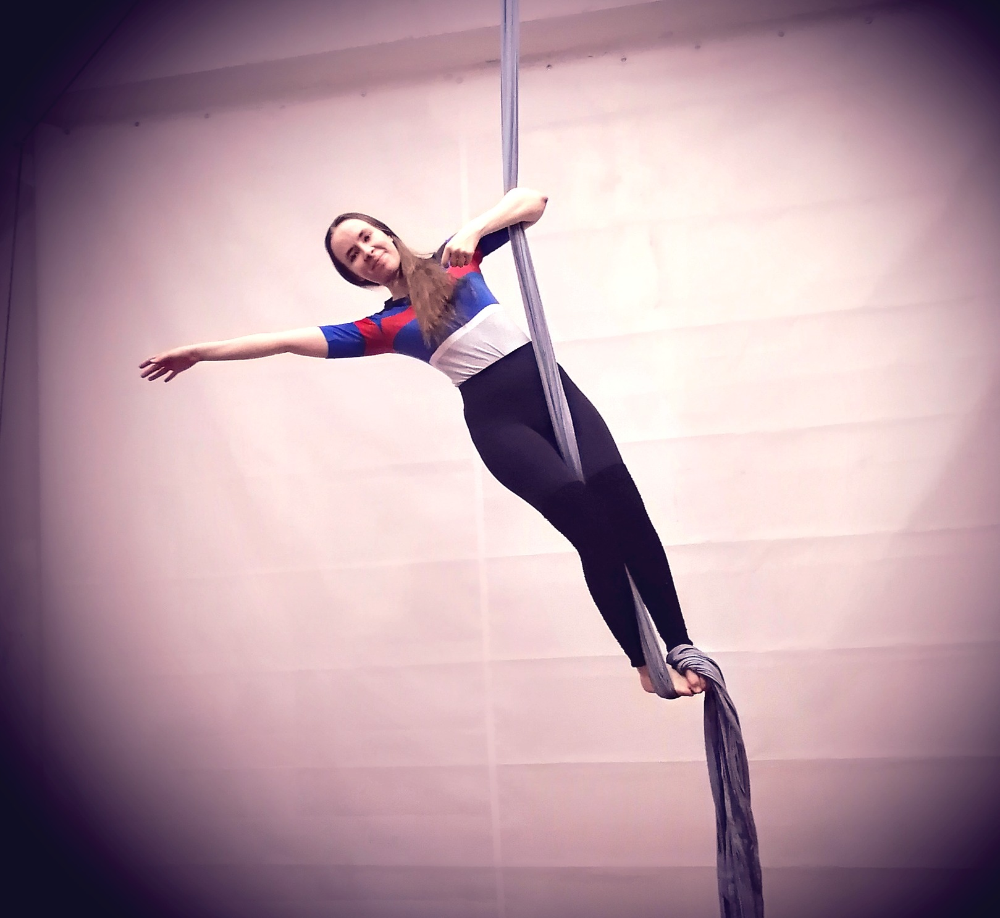

(Категория: подъемы)
Стоя на полу.
Заматываем полотна левой (правой) ногой снаружи вовнутрь 1 раз, стопой свободной ноги встаем на подъем замотанной ноги так, чтобы между стопой и подъемом оказалось полотно. Зажимая таким образом полотно образуется замок, стоя на котором можно отпустить одну руку от полотна и отвести ее в сторону. Делаем смену рук. Удерживаем корпус параллельно полотнам. Допускается поднятие стопы нижней ноги наверх (не натянутый носок).
✔ Выполнен подъем с левой ноги (1 шаг)
✔ Выполнен подъем с правой ноги (1 шаг)
✔ Выполнена смена рук
✔ Удержание 3 секунды
(Категория: подъемы)

Стоя на полу.
Прислоняем согнутую в колене и стопе левую (правую) ногу к полотну так, чтобы полотно оказалось с внутренней стороны колена и наружной стороны стопы. Правой (левой) ногой подхватываем стопой полотно снизу так, чтобы оно образовало петлю для согнутой ноги, и зажимаем полотно между стопой и подъемом, образуя замок. Удерживаем корпус параллельно полотнам. Делаем смену рук.
✔ Выполнен подъем с левой ноги (1 шаг)
✔ Выполнен подъем с правой ноги (1 шаг)
✔ Выполнена смена рук
✔ Удержание 3 секунды